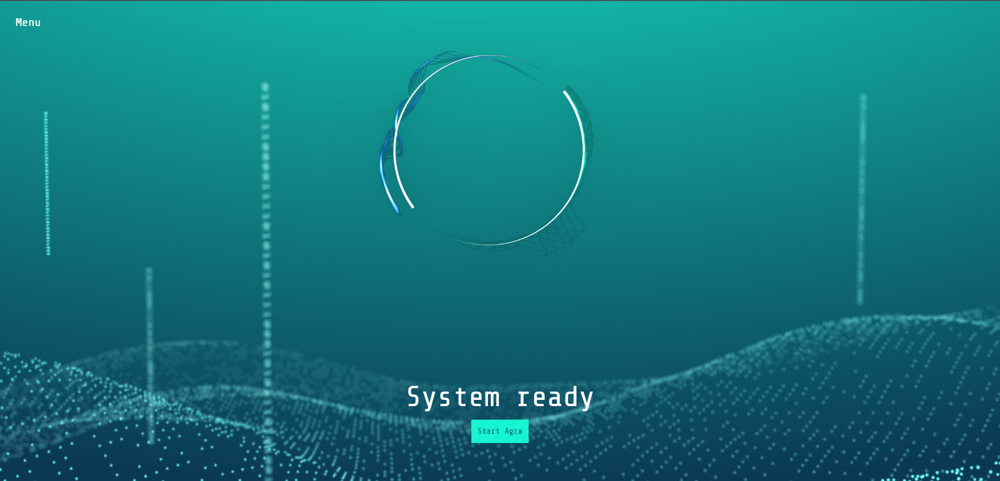

This project was all about forging your own path through a creative process. The only guideline provided was that our work should be coded in Processing 4, creating a fully functional Arduino controller that influences the code and somehow generates art that visualizes music. It was quite the challenge, navigating uncharted territory with no clear starting point and uncertain where the journey would ultimately lead us.
After much trial and error, I have developed a fractal generator that visualizes music. Using an Arduino controller connected to the computer via USB, users can manipulate the fractal and other geometrical shapes by adjusting the knobs. The Arduino sends signals to the Processing 4 code, which calculates all of the geometrical shapes, such as the Mandelbrot set.
The Mandelbrot set is renowned in mathematics for its infinitely complex, self-similar patterns. These fractals, generated by iterating a simple equation, offer a new perspective on the world, showcasing natural patterns found in various phenomena such as trees, rivers, and clouds, which interest me greatly.
Fractals extend beyond geometric shapes, describing processes over time. With applications in various fields, they reveal patterns in images, sounds, and chaos theory graphs. My interest in fractals grew during a VRChat session with "Fractal Love," shifting my focus from VR gaming to exploring the intricate patterns and their significance. While Mandelbulb3D software helped me create 2D renders of a 3D object, integrating them into a 3D space proved challenging and prompted a reassessment of their use in my creative pursuits.
The development of my own adaptation of "Fractal Love" was challenging. Taking a deep dive back into mathematics, I spent hours watching YouTube videos explaining the principles of fractals and how to translate this mathematical understanding into code. I must admit, there were times when it was quite frustrating. However, the process proved to be extremely rewarding and satisfying as I witnessed my own fractals come to life on the screen.
In the end, I chose to create a 3-dimensional environment in Processing 4 using libraries to render not only my fractals but also other shapes as 3-dimensional objects. This approach added more depth, allowing me to appreciate the fractals in their full glory. As the project evolved, I decided not to limit the shapes to just fractals but to follow my instincts and create what felt right.The opportunity to perform live with a jazz band was exhilarating, witnessing everything come to life.